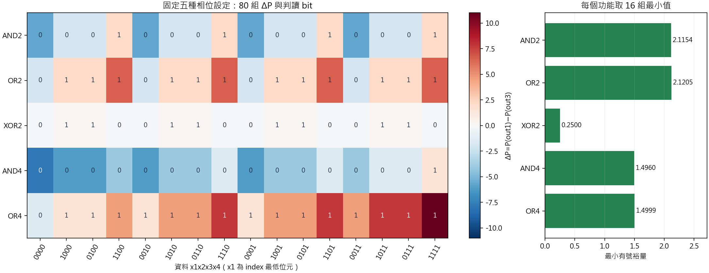
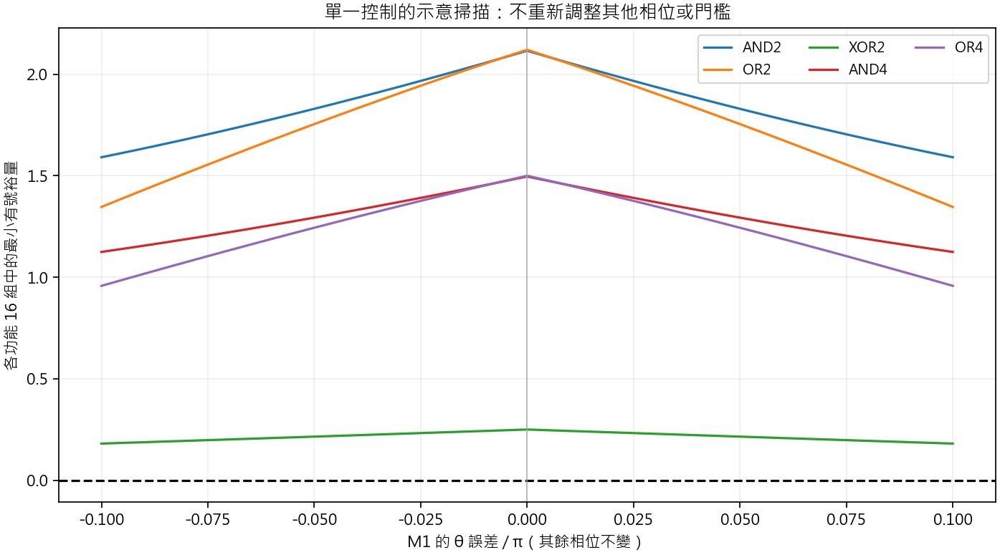

M1 S4｜五種功能與完整 80 筆真值驗收
同一組光路，只換相位；完整送入四位元資料，核對真值、未作用輸入與最小有號裕量。
80/80 真值12 組未作用輸入18 項本步測試本輪結果：80/80 筆真值、12/12 組未作用輸入檢查；18/18 項本步測試、66/66 項前步回歸。五功能 80 筆核心驗收通過。學員作答另行驗收。
1．先預測，再執行完整驗收
建議 90 分鐘：預測與固定規則 10 分、五組相位 10 分、80 筆執行 20 分、未作用輸入 15 分、裕量 15 分、診斷與交付 20 分。
- AND2 只看 x1／x2，為何仍要跑 16 組，而不只跑四組？
- 某組資料的 |ΔP| 很大，但符號與真值相反，應算通過嗎？
- 把參考光關掉或把兩個讀取埠交換，原本的相位還能完成所有功能嗎？
- 若改相位後出錯，可不可以每組資料另外換一個門檻？
2．先固定驗收規則與真值
五路輸入：[x1,x2,x3,x4,R]ᵀ；資料 0→場0、1→場1
資料光與參考光的基準相位皆為 0；R 振幅=3，功率=9
光路：同一組 B7 OPS，七顆 MZI／十四個相位
模型：理想、無損、前向；不對每組輸入各自歸一化
ΔP=P(out1)−P(out3)；固定門檻 τ=0
ΔP>ε → 1；ΔP<−ε → 0；|ΔP|≤ε → 邊界（None）
ε=10⁻¹⁰，邊界不得算成正確邏輯
每個功能都送入全部 16 組四位元資料，共 5×16=80 組| 功能 | 真值 | 16 組中應為 1 的筆數 |
|---|---|---|
| AND2 | x1 AND x2 | 4 |
| OR2 | x1 OR x2 | 12 |
| XOR2 | x1 與 x2 恰有一個為 1 | 8 |
| AND4 | 四路全為 1 | 1 |
| OR4 | 四路至少一個為 1 | 15 |
陣列 index 的最低位元是 x1，顯示字串仍依 x1→x4 排列。因此 index 1 顯示 1000、index 3 顯示 1100。AND2／OR2／XOR2 的 x3、x4 不參與布林定義，但仍是實際送入的光場。
3．五組相位，維持同一個 B7
本步從 C 槽已有的相位快照擷取 theta／phi，使用完整精度重新組 U。這是本輪完整功能驗收，沒有重新最佳化相位。舊檔中的 U 只用於相容性比較，真值由上方布林規則另算。
| 功能 | theta[0..6] | phi[0..6] |
|---|---|---|
| AND2 | 4.712389, 0.000000, 0.000000, 3.138108, 2.258305, 6.283185, 3.141593 | 0.000000, 0.005703, 5.499148, 5.345991, 6.281824, 5.834382, 0.445547 |
| OR2 | 1.570796, 6.283185, 0.000000, 3.162439, 4.474541, 6.283185, 3.141593 | 3.141593, 3.151149, 0.878685, 1.547845, 3.048306, 3.625827, 5.601884 |
| XOR2 | 5.851010, 2.813002, 1.604536, 1.072901, 3.141593, 2.223714, 3.147945 | 5.176820, 3.311402, 4.525966, 5.755170, 2.153561, 0.046314, 6.160687 |
| AND4 | 4.712389, 4.102966, 5.052225, 2.875648, 1.987242, 0.000003, 5.459192 | 6.283185, 3.141593, 5.497784, 4.203953, 5.808557, 0.394980, 3.718770 |
| OR4 | 1.570796, 1.068438, 1.230959, 5.910011, 1.445456, 6.283185, 4.601038 | 3.141593, 0.000000, 3.926991, 5.882425, 3.060332, 3.536348, 0.848068 |
顯示六位小數供閱讀；執行一律讀取 完整精度相位 JSON。來源與 SHA-256 · 十四相位 CSV。theta／phi 單位為弧度；學員誤差設定的 *_pi 則以 π 為單位。
4．學員執行：一次產生 80 筆結果
Set-Location -LiteralPath 'C:\EDA_Codex\Lab06b'
& .\scripts\run_m1_s4.ps1| 功能 | 正確／總數 | 邊界 | 最小有號裕量 | 最差案例（取第一筆） | 結果 |
|---|---|---|---|---|---|
| AND2 | 16/16 | 0 | 2.115379183 | 1010 | 通過 |
| OR2 | 16/16 | 0 | 2.120502406 | 0100 | 通過 |
| XOR2 | 16/16 | 0 | 0.250000000 | 1111 | 通過 |
| AND4 | 16/16 | 0 | 1.496028201 | 1101 | 通過 |
| OR4 | 16/16 | 0 | 1.499855345 | 0100 | 通過 |

AND2：查看完整 16 組真值、功率與裕量
| index | x1x2x3x4 | 真值 | P(out1) | P(out3) | ΔP | 有號裕量 | bit | 驗收 |
|---|---|---|---|---|---|---|---|---|
| 0 | 0000 | 0 | 1.644238 | 7.355762 | -5.711524 | 5.711524 | 0 | 通過 |
| 1 | 1000 | 0 | 3.692310 | 5.807690 | -2.115379 | 2.115379 | 0 | 通過 |
| 2 | 0100 | 0 | 3.692310 | 5.807690 | -2.115379 | 2.115379 | 0 | 通過 |
| 3 | 1100 | 1 | 6.557690 | 4.442310 | 2.115379 | 2.115379 | 1 | 通過 |
| 4 | 0010 | 0 | 1.644238 | 7.355762 | -5.711524 | 5.711524 | 0 | 通過 |
| 5 | 1010 | 0 | 3.692310 | 5.807690 | -2.115379 | 2.115379 | 0 | 通過 |
| 6 | 0110 | 0 | 3.692310 | 5.807690 | -2.115379 | 2.115379 | 0 | 通過 |
| 7 | 1110 | 1 | 6.557690 | 4.442310 | 2.115379 | 2.115379 | 1 | 通過 |
| 8 | 0001 | 0 | 1.644238 | 7.355762 | -5.711524 | 5.711524 | 0 | 通過 |
| 9 | 1001 | 0 | 3.692310 | 5.807690 | -2.115379 | 2.115379 | 0 | 通過 |
| 10 | 0101 | 0 | 3.692310 | 5.807690 | -2.115379 | 2.115379 | 0 | 通過 |
| 11 | 1101 | 1 | 6.557690 | 4.442310 | 2.115379 | 2.115379 | 1 | 通過 |
| 12 | 0011 | 0 | 1.644238 | 7.355762 | -5.711524 | 5.711524 | 0 | 通過 |
| 13 | 1011 | 0 | 3.692310 | 5.807690 | -2.115379 | 2.115379 | 0 | 通過 |
| 14 | 0111 | 0 | 3.692310 | 5.807690 | -2.115379 | 2.115379 | 0 | 通過 |
| 15 | 1111 | 1 | 6.557690 | 4.442310 | 2.115379 | 2.115379 | 1 | 通過 |
OR2：查看完整 16 組真值、功率與裕量
| index | x1x2x3x4 | 真值 | P(out1) | P(out3) | ΔP | 有號裕量 | bit | 驗收 |
|---|---|---|---|---|---|---|---|---|
| 0 | 0000 | 0 | 3.439749 | 5.560251 | -2.120502 | 2.120502 | 0 | 通過 |
| 1 | 1000 | 1 | 5.810251 | 3.689749 | 2.120502 | 2.120502 | 1 | 通過 |
| 2 | 0100 | 1 | 5.810251 | 3.689749 | 2.120502 | 2.120502 | 1 | 通過 |
| 3 | 1100 | 1 | 8.798559 | 2.201441 | 6.597119 | 6.597119 | 1 | 通過 |
| 4 | 0010 | 0 | 3.439749 | 5.560251 | -2.120502 | 2.120502 | 0 | 通過 |
| 5 | 1010 | 1 | 5.810251 | 3.689749 | 2.120502 | 2.120502 | 1 | 通過 |
| 6 | 0110 | 1 | 5.810251 | 3.689749 | 2.120502 | 2.120502 | 1 | 通過 |
| 7 | 1110 | 1 | 8.798559 | 2.201441 | 6.597119 | 6.597119 | 1 | 通過 |
| 8 | 0001 | 0 | 3.439749 | 5.560251 | -2.120502 | 2.120502 | 0 | 通過 |
| 9 | 1001 | 1 | 5.810251 | 3.689749 | 2.120502 | 2.120502 | 1 | 通過 |
| 10 | 0101 | 1 | 5.810251 | 3.689749 | 2.120502 | 2.120502 | 1 | 通過 |
| 11 | 1101 | 1 | 8.798559 | 2.201441 | 6.597119 | 6.597119 | 1 | 通過 |
| 12 | 0011 | 0 | 3.439749 | 5.560251 | -2.120502 | 2.120502 | 0 | 通過 |
| 13 | 1011 | 1 | 5.810251 | 3.689749 | 2.120502 | 2.120502 | 1 | 通過 |
| 14 | 0111 | 1 | 5.810251 | 3.689749 | 2.120502 | 2.120502 | 1 | 通過 |
| 15 | 1111 | 1 | 8.798559 | 2.201441 | 6.597119 | 6.597119 | 1 | 通過 |
XOR2：查看完整 16 組真值、功率與裕量
| index | x1x2x3x4 | 真值 | P(out1) | P(out3) | ΔP | 有號裕量 | bit | 驗收 |
|---|---|---|---|---|---|---|---|---|
| 0 | 0000 | 0 | 0.000000 | 0.250000 | -0.250000 | 0.250000 | 0 | 通過 |
| 1 | 1000 | 1 | 0.500000 | 0.250000 | 0.250000 | 0.250000 | 1 | 通過 |
| 2 | 0100 | 1 | 0.500000 | 0.250000 | 0.250000 | 0.250000 | 1 | 通過 |
| 3 | 1100 | 0 | 0.000000 | 0.250000 | -0.250000 | 0.250000 | 0 | 通過 |
| 4 | 0010 | 0 | 0.000000 | 0.250000 | -0.250000 | 0.250000 | 0 | 通過 |
| 5 | 1010 | 1 | 0.500000 | 0.250000 | 0.250000 | 0.250000 | 1 | 通過 |
| 6 | 0110 | 1 | 0.500000 | 0.250000 | 0.250000 | 0.250000 | 1 | 通過 |
| 7 | 1110 | 0 | 0.000000 | 0.250000 | -0.250000 | 0.250000 | 0 | 通過 |
| 8 | 0001 | 0 | 0.000000 | 0.250000 | -0.250000 | 0.250000 | 0 | 通過 |
| 9 | 1001 | 1 | 0.500000 | 0.250000 | 0.250000 | 0.250000 | 1 | 通過 |
| 10 | 0101 | 1 | 0.500000 | 0.250000 | 0.250000 | 0.250000 | 1 | 通過 |
| 11 | 1101 | 0 | 0.000000 | 0.250000 | -0.250000 | 0.250000 | 0 | 通過 |
| 12 | 0011 | 0 | 0.000000 | 0.250000 | -0.250000 | 0.250000 | 0 | 通過 |
| 13 | 1011 | 1 | 0.500000 | 0.250000 | 0.250000 | 0.250000 | 1 | 通過 |
| 14 | 0111 | 1 | 0.500000 | 0.250000 | 0.250000 | 0.250000 | 1 | 通過 |
| 15 | 1111 | 0 | 0.000000 | 0.250000 | -0.250000 | 0.250000 | 0 | 通過 |
AND4：查看完整 16 組真值、功率與裕量
| index | x1x2x3x4 | 真值 | P(out1) | P(out3) | ΔP | 有號裕量 | bit | 驗收 |
|---|---|---|---|---|---|---|---|---|
| 0 | 0000 | 0 | 0.572926 | 8.427074 | -7.854148 | 7.854148 | 0 | 通過 |
| 1 | 1000 | 0 | 1.539442 | 7.710558 | -6.171116 | 6.171116 | 0 | 通過 |
| 2 | 0100 | 0 | 1.539442 | 7.710559 | -6.171116 | 6.171116 | 0 | 通過 |
| 3 | 1100 | 0 | 2.974129 | 7.025872 | -4.051743 | 4.051743 | 0 | 通過 |
| 4 | 0010 | 0 | 1.539442 | 7.710558 | -6.171116 | 6.171116 | 0 | 通過 |
| 5 | 1010 | 0 | 2.974128 | 7.025872 | -4.051743 | 4.051743 | 0 | 通過 |
| 6 | 0110 | 0 | 2.974129 | 7.025872 | -4.051743 | 4.051743 | 0 | 通過 |
| 7 | 1110 | 0 | 4.876986 | 6.373014 | -1.496028 | 1.496028 | 0 | 通過 |
| 8 | 0001 | 0 | 1.539442 | 7.710558 | -6.171116 | 6.171116 | 0 | 通過 |
| 9 | 1001 | 0 | 2.974128 | 7.025871 | -4.051743 | 4.051743 | 0 | 通過 |
| 10 | 0101 | 0 | 2.974128 | 7.025871 | -4.051743 | 4.051743 | 0 | 通過 |
| 11 | 1101 | 0 | 4.876986 | 6.373014 | -1.496028 | 1.496028 | 0 | 通過 |
| 12 | 0011 | 0 | 2.974128 | 7.025871 | -4.051743 | 4.051743 | 0 | 通過 |
| 13 | 1011 | 0 | 4.876986 | 6.373014 | -1.496028 | 1.496028 | 0 | 通過 |
| 14 | 0111 | 0 | 4.876986 | 6.373014 | -1.496028 | 1.496028 | 0 | 通過 |
| 15 | 1111 | 1 | 7.248014 | 5.751986 | 1.496028 | 1.496028 | 1 | 通過 |
OR4：查看完整 16 組真值、功率與裕量
| index | x1x2x3x4 | 真值 | P(out1) | P(out3) | ΔP | 有號裕量 | bit | 驗收 |
|---|---|---|---|---|---|---|---|---|
| 0 | 0000 | 0 | 3.750072 | 5.249928 | -1.499855 | 1.499855 | 0 | 通過 |
| 1 | 1000 | 1 | 5.374928 | 3.875072 | 1.499855 | 1.499855 | 1 | 通過 |
| 2 | 0100 | 1 | 5.374928 | 3.875072 | 1.499855 | 1.499855 | 1 | 通過 |
| 3 | 1100 | 1 | 7.291446 | 2.708554 | 4.582891 | 4.582891 | 1 | 通過 |
| 4 | 0010 | 1 | 5.374928 | 3.875072 | 1.499855 | 1.499855 | 1 | 通過 |
| 5 | 1010 | 1 | 7.291446 | 2.708554 | 4.582891 | 4.582891 | 1 | 通過 |
| 6 | 0110 | 1 | 7.291446 | 2.708554 | 4.582891 | 4.582891 | 1 | 通過 |
| 7 | 1110 | 1 | 9.499626 | 1.750374 | 7.749253 | 7.749253 | 1 | 通過 |
| 8 | 0001 | 1 | 5.374928 | 3.875072 | 1.499855 | 1.499855 | 1 | 通過 |
| 9 | 1001 | 1 | 7.291446 | 2.708554 | 4.582891 | 4.582891 | 1 | 通過 |
| 10 | 0101 | 1 | 7.291446 | 2.708554 | 4.582891 | 4.582891 | 1 | 通過 |
| 11 | 1101 | 1 | 9.499626 | 1.750374 | 7.749253 | 7.749253 | 1 | 通過 |
| 12 | 0011 | 1 | 7.291446 | 2.708554 | 4.582891 | 4.582891 | 1 | 通過 |
| 13 | 1011 | 1 | 9.499626 | 1.750374 | 7.749253 | 7.749253 | 1 | 通過 |
| 14 | 0111 | 1 | 9.499626 | 1.750374 | 7.749253 | 7.749253 | 1 | 通過 |
| 15 | 1111 | 1 | 11.999470 | 1.000530 | 10.998939 | 10.998939 | 1 | 通過 |
下載完整 80 筆 CSV；JSON 另保存每筆五路複數場、全部輸出功率及輸入／輸出總功率。
5．未作用輸入：判讀相同，不必要求每個功率完全相同
固定 x1／x2，輪流將 x3／x4 設為 00、01、10、11。四組資料的布林真值必須相同，四個判讀也都必須符合它。類比功率差可以不同，只要仍有正確裕量。
| 功能 | 固定 x1x2 | 實際四組資料 | 四筆 bit | ΔP 最大−最小 | 檢查 |
|---|---|---|---|---|---|
| AND2 | 00 | 0000 / 0010 / 0001 / 0011 | 0 / 0 / 0 / 0 | 0.000000013 | 通過 |
| AND2 | 01 | 0100 / 0110 / 0101 / 0111 | 0 / 0 / 0 / 0 | 0.000000002 | 通過 |
| AND2 | 10 | 1000 / 1010 / 1001 / 1011 | 0 / 0 / 0 / 0 | 0.000000002 | 通過 |
| AND2 | 11 | 1100 / 1110 / 1101 / 1111 | 1 / 1 / 1 / 1 | 0.000000010 | 通過 |
| OR2 | 00 | 0000 / 0010 / 0001 / 0011 | 0 / 0 / 0 / 0 | 0.000000007 | 通過 |
| OR2 | 01 | 0100 / 0110 / 0101 / 0111 | 1 / 1 / 1 / 1 | 0.000000008 | 通過 |
| OR2 | 10 | 1000 / 1010 / 1001 / 1011 | 1 / 1 / 1 / 1 | 0.000000008 | 通過 |
| OR2 | 11 | 1100 / 1110 / 1101 / 1111 | 1 / 1 / 1 / 1 | 0.000000022 | 通過 |
| XOR2 | 00 | 0000 / 0010 / 0001 / 0011 | 0 / 0 / 0 / 0 | 0.000000000 | 通過 |
| XOR2 | 01 | 0100 / 0110 / 0101 / 0111 | 1 / 1 / 1 / 1 | 0.000000000 | 通過 |
| XOR2 | 10 | 1000 / 1010 / 1001 / 1011 | 1 / 1 / 1 / 1 | 0.000000000 | 通過 |
| XOR2 | 11 | 1100 / 1110 / 1101 / 1111 | 0 / 0 / 0 / 0 | 0.000000000 | 通過 |
只測 x3=x4=0 會漏掉其他實際輸入，不足以確認功能。未作用輸入群組 CSV。
6．最小有號裕量：方向先正確，才談餘裕
真值 t∈{0,1}
margin = ΔP−τ
signed_margin = (2t−1) × margin
正確方向 → signed_margin>0
錯誤方向 → signed_margin<0
正式驗收：每筆 bit 等於真值，且 signed_margin>ε
minimum_clearance = min(signed_margin)−ε
不能只看 min|ΔP|：方向相反，也可能有很大的 |ΔP|。本輪最小有號裕量最低的是 XOR2，約 0.250000，最差案例第一筆為 1111。當全部符號正確且 τ=0 時，最小有號裕量與最小 |ΔP| 才相同。這不是噪聲標準差、錯誤率或實體功率規格。
| 功能 | 真值0→判0 | 真值0→判1 | 真值1→判0 | 真值1→判1 | 邊界 |
|---|---|---|---|---|---|
| AND2 | 12 | 0 | 0 | 4 | 0 |
| OR2 | 4 | 0 | 0 | 12 | 0 |
| XOR2 | 8 | 0 | 0 | 8 | 0 |
| AND4 | 15 | 0 | 0 | 1 | 0 |
| OR4 | 1 | 0 | 0 | 15 | 0 |
7．診斷實驗：保留基準，改一個條件再比較
| 對照 | 正確／80 | 邊界 | 應注意 |
|---|---|---|---|
| 對調正／負讀取埠 | 0/80 | 0 | 功率差反號；么正性仍可通過。 |
| R 振幅改為 0 | 40/80 | 14 | 沒有參考光，部分真值失敗或落在邊界。 |
| 交換每顆 theta／phi | 33/80 | 0 | 物理相位位置不同，不能交換參數。 |

學員可在 m1_s4_lab.json 選功能、資料、R、相位誤差及 MZI 損耗，再重跑。theta_error_mzi_index=0～6 對應 M1～M7。這些修改只改變獨立的學員診斷，正式 80 筆基準始終維持 R=3、無損、零參考相位與門檻 0。
| 內容 | 結果 |
|---|---|
| 功能／資料 | AND2 / 1100 |
| 該功能全部 16 組 | 16/16；邊界 0 |
| 所選資料 P(out1)／P(out3) | 6.557689591 / 4.442310409 |
| ΔP／有號裕量／bit | 2.115379183 / 2.115379183 / 1 |
| 最小有號裕量 | 2.115379183 |
互動預測：只換功能相位，或刻意偏離基準
瀏覽器依十四相位、固定 OPS 重算複數光場；不以真值直接設定輸出。互動固定無損、τ=0、ε=10⁻¹⁰。改變 R 或相位誤差後，屬於診斷；不會改寫上方 80 筆正式驗收表。
8．測試與檔案
| 內容 | 結果／入口 |
|---|---|
| 本步單元測試 | 18/18；原始 log |
| 前步回歸 | 66/66；M0 S3、M1 S1～S3。 |
| 本步計算檢查 | 13/13；全部場、功率、版本與 SHA-256 |
| 共用驗收程式 | logic_validation.py · 單元測試 |
| 實驗入口 | run_logic.py · 相位示例掃描 CSV |
本步完成理想 B7 的全功能數值驗收。尚未加入新相位合成、PDK 色散／反射、熱校正、動態接收器或實體 Chip 量測；本輪不會改寫原始來源或 D 槽。
下一步 M1 S5：將固定光路、十四個相位通道、五種功能與判讀規則整理成規格檔及相位設定檔，交給 M2 的 PDK／PIC 實作。